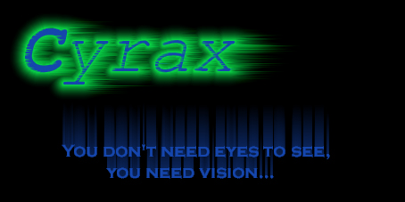

I'm back with another defacement.
Now i'm not a leeto hacker at all, but i have some huge unix/linux knowledge and now i'm kinda exploring NT (windows 2000), and i must say NT servers are really vulnerable and easy to hack. Some big companies still have the folder and printer sharing open and other stupid things like msadc2.pl, eEye's buffer overflow, etc. It isn't Microsoft's fault that those servers are vulnerable, the reason is that the webmasters have never heard of words like "UPGRADE", "SECURITY", "FIREWALL", etc.
So i would recommend companies to get better webmasters, or easily use updated versions of their OS.
-Cyrax-